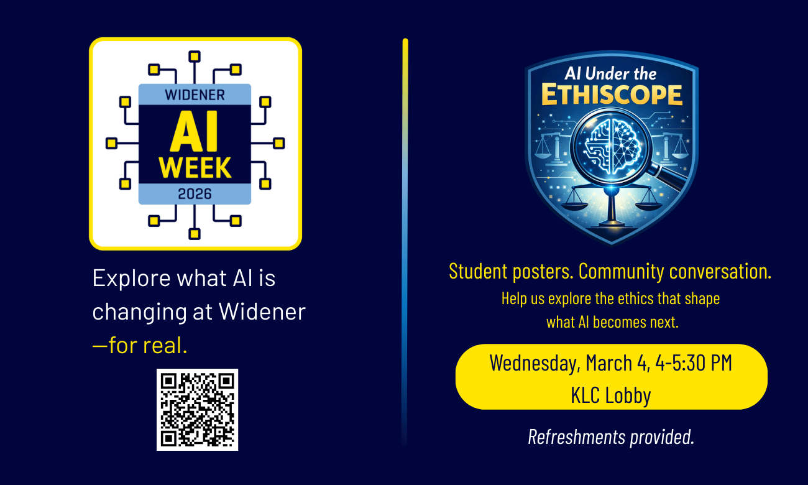
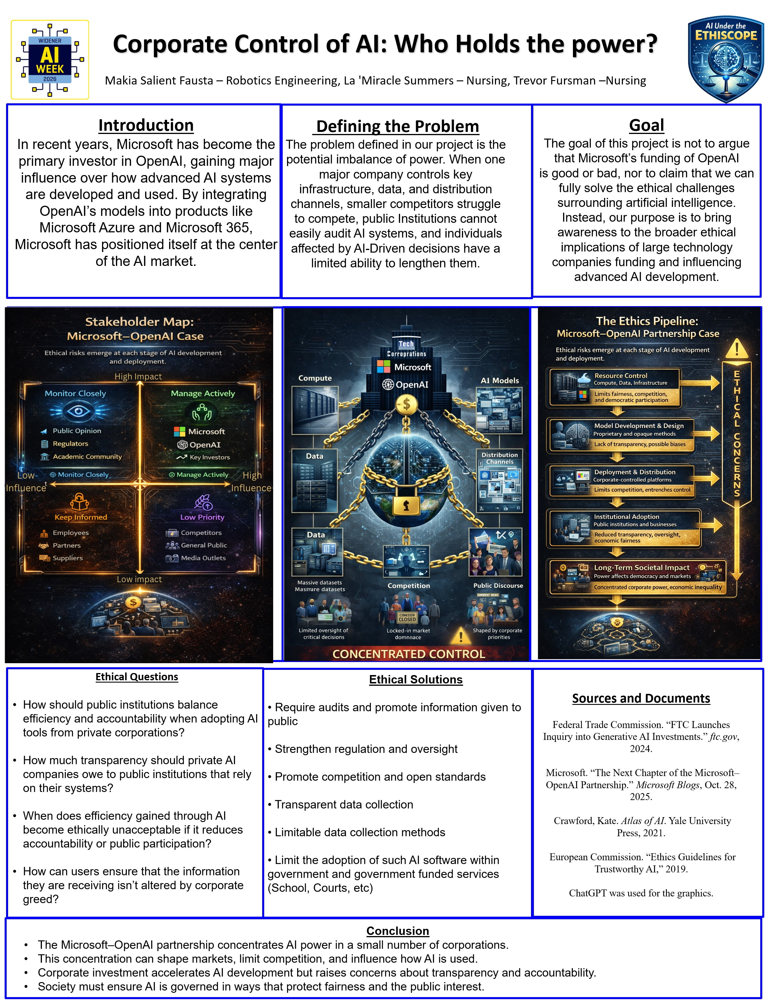
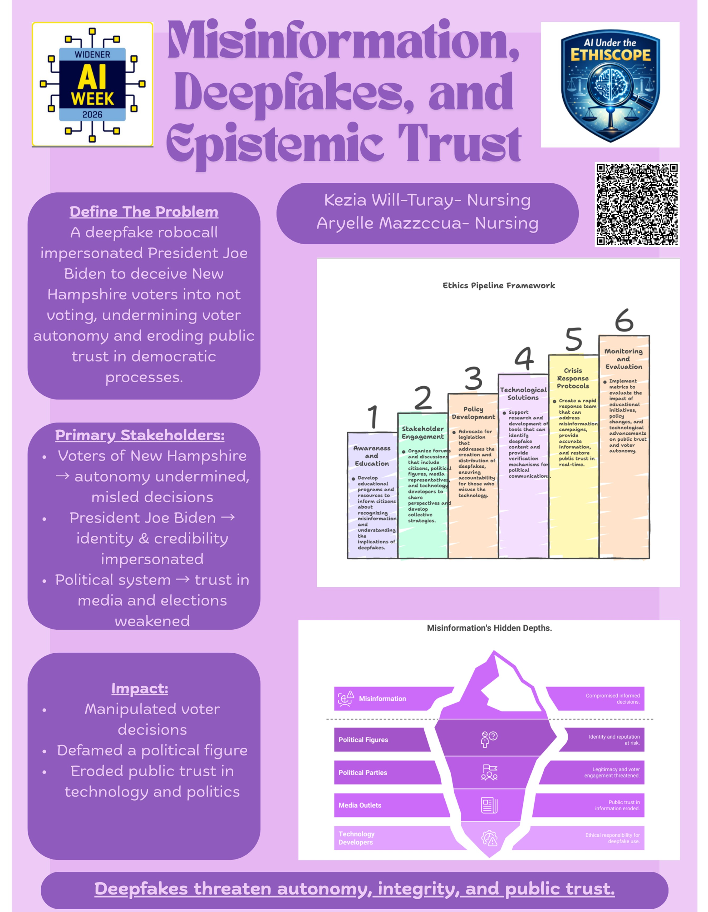

AI Under the Ethiscope was a poster showcase hosted by PHIL-388(H): Ethics—an honors ethics seminar—in the Kapelski Learning Center lobby. Students had spent the first half of the semester applying a structured ethical analysis framework to real AI cases, examining each through multiple lenses: stakeholder impact, data procurement, model behavior, deployment incentives, and downstream consequences. In the second half, they turn to the normative side—developing original AI governance policy proposals grounded in what their analysis revealed.
Ten original research posters were displayed on easels throughout the lobby. Community members circulated freely, engaged directly with student presenters, and ended the session with a group reflection. The format embodied the spirit of the event: not a lecture about AI ethics, but a demonstration that Widener students are already doing rigorous ethical analysis of AI—and have something to teach the rest of the campus community.
Each poster traced an AI system's ethical journey through six stages:
Ten original student research posters were displayed. Cases span hiring bias, intellectual property, autonomous vehicles, social media manipulation, environmental justice, misinformation, corporate power, surveillance, labor automation, and obligations to AI itself.
.jpg)
Examined the 2022 incident in which Google engineer Blake Lemoine publicly claimed the LaMDA language model was sentient. Google denied the claim and placed Lemoine on administrative leave. The students found that even if LaMDA was not truly sentient, the incident reveals how easily humans attribute moral status to machines—and that AI developers have an ethical obligation to establish transparency, oversight, and safeguards as systems grow more human-like.

Examined Bartz v. Anthropic, in which authors sued Anthropic for training Claude on nearly 500,000 copyrighted books downloaded from piracy sites without consent. A judge ruled this did not constitute fair use; Anthropic reached a $1.5B settlement. The students found the case raises deep questions about authorship and economic harm: AI-generated content now competes directly with the works it was trained on, threatening the viability of creative labor.

Examined the 2018 fatal collision in Tempe, Arizona in which an Uber self-driving vehicle struck and killed pedestrian Elaine Herzberg. The AI perception system repeatedly misclassified her before delaying braking; the distracted safety driver failed to intervene. The students traced a cascade of failures across model, workflow, and governance levels, and found that distributed responsibility among companies, regulators, and operators made accountability nearly impossible to assign.

Examined Mobley v. Workday, in which Derek Mobley—a Black man over 40 with anxiety and depression—applied to more than 100 positions using Workday's AI screening system and was rejected every time before any human reviewed his application. A federal judge allowed a class action to proceed. The students found that Workday's algorithm encoded historical hiring biases and that the absence of any human review or appeals process denied applicants due process and accountability.

Examined the Microsoft–OpenAI partnership as a case study in AI power concentration. Through massive cloud investment and the integration of OpenAI models into Azure and Microsoft 365, Microsoft has become a primary gatekeeper of advanced AI—prompting a 2024 FTC inquiry. The students found that when public institutions adopt proprietary AI "black boxes," they cede decision-making power to private actors whose priorities may not align with public accountability, leaving individuals affected by AI decisions without meaningful consent or recourse.

Examined the FTC's 2024 action against Rytr, an AI writing assistant that allowed subscribers to generate thousands of fake reviews placed on external websites to manipulate consumer decisions. The FTC settled and issued a proposed order; the order was dismissed in December 2025 under the Trump administration's AI Action Plan. The students found that Rytr's fake reviews corrupted the information ecosystem and illustrated how AI tools can be weaponized to undermine market trust when regulatory oversight fails to keep pace.

Examined a proposed 1.2-gigawatt data center in Delaware City, Pennsylvania, which would consume 12.7 million gallons of water annually and rely on 516 diesel generators. Local communities—particularly in the Philadelphia region—bear disproportionate costs: higher electricity bills, strained water supplies, air pollution, and increased carbon emissions, while corporations receive tax incentives and create few permanent jobs. Drawing on researcher Sasha Luccioni's work, they found that data centers operate as "black boxes" with no public disclosure of energy use and no meaningful community input.

Examined the 2024 New Hampshire deepfake robocall in which an AI-generated audio clip impersonating President Biden was used to discourage Democrats from voting in the state's primary. The students traced harm across multiple stakeholder groups: voters whose decisions were manipulated, Biden whose identity was weaponized, political parties whose legitimacy was threatened, and the broader democratic system whose dependence on trusted information was eroded. They called for real-time detection mechanisms, platform accountability, and legal frameworks adequate to the speed of AI-generated disinformation.

Examined Amazon's internal AI recruiting tool (2014–2017), which assigned star ratings to applicants based on a decade of historical resume data from the male-dominated tech industry. Without using an explicit gender field, the model penalized proxies for women—such as the phrase "women's" in activities or attendance at all-women's colleges—demonstrating how biased training data produces discriminatory outcomes even when protected attributes are formally excluded. Amazon disbanded the project by early 2017, but not before its recommendations had been visible internally.

Examined TikTok's "For You Page" as a case study in AI-driven manipulation of human autonomy. The system tracks granular behavioral data—watch time, pauses, replays—and uses real-time feedback loops to optimize engagement over wellbeing, leveraging psychological vulnerabilities including social validation and addiction without users' full informed consent. The students traced the ethical harm through three pipeline stages: surveillance-based data collection, a model that incentivizes amplifying harmful content, and a deployment design (infinite scroll, autoplay) that removes natural stopping cues and contributes to mental health risks—especially in teenagers.
Attendees circulated freely among 10 poster stations arranged on easels provided by the Science Department throughout the Kapelski Learning Center lobby. PHIL-388 students stood with their posters and engaged visitors directly in conversation about their cases, analysis, and conclusions. Approximately 40 people attended, including the Dean of Arts & Sciences.
Distributed throughout the gallery were nine large Claim Stakes cards—bold, arguable statements about AI ethics. Each attendee received three dot stickers and was asked to place them on the claims they found most contested, most troubling, or most worth arguing about. The instructions were clear: stake claims you find genuinely interesting, not just the ones you agree with. The goal was to find where the real disagreements were, not to win a vote. Clusters of dots became conversation starters—an invitation to find out why others had staked the same claim.
The nine claims ranged from "AI cannot be morally responsible—only people can" to "The most dangerous AI isn't the one that wants to harm you—it's the one that doesn't care." View the activity instructions · View the nine claims